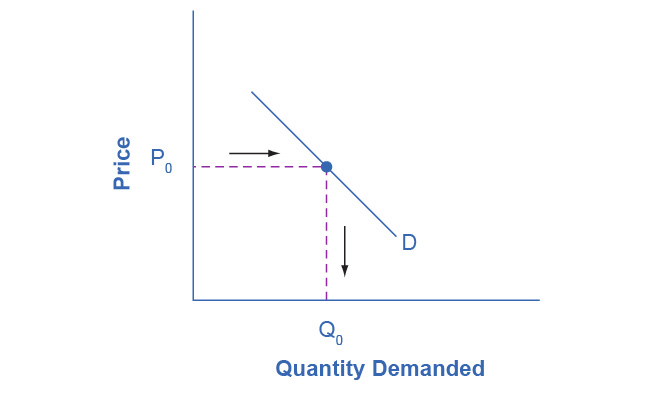
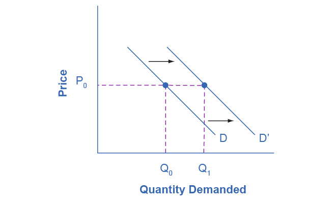
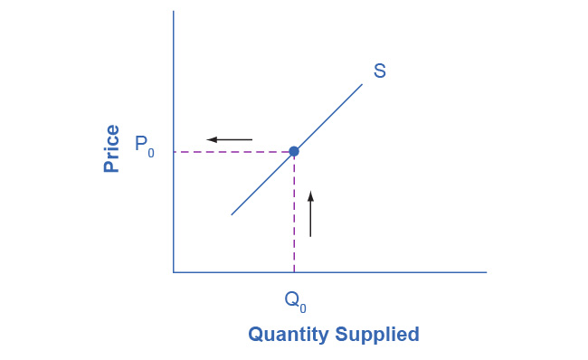
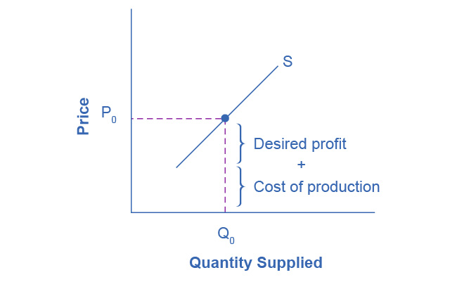
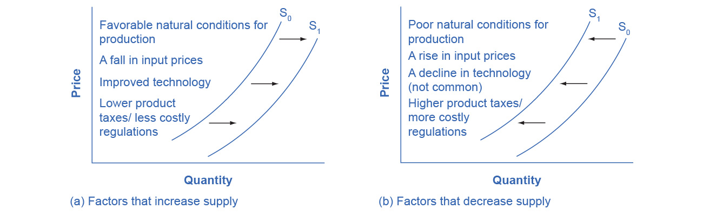

3.2 Shifts in Demand and Supply for Goods and Services
Learning Objectives
By the end of this section, you will be able to:
- Identify factors that affect demand
- Graph demand curves and demand shifts
- Identify factors that affect supply
- Graph supply curves and supply shifts
The previous module explored how price affects the quantity demanded and the quantity supplied. The result was the demand curve and the supply curve. Price, however, is not the only factor that influences buyers’ and sellers’ decisions. For example, how is demand for vegetarian food affected if, say, health concerns cause more consumers to avoid eating meat? How is the supply of diamonds affected if diamond producers discover several new diamond mines? What are the major factors, in addition to the price, that influence demand or supply?
Link It Up
Visit this website to read a brief note on how marketing strategies can influence supply and demand of products.
What Factors Affect Demand?
We defined demand as the amount of some product a consumer is willing and able to purchase at each price. That suggests at least two factors that affect demand. Willingness to purchase suggests a desire, based on what economists call tastes and preferences. If you neither need nor want something, you will not buy it, and if you really like something, you will buy more of it than someone who does not share your strong preference for it. Ability to purchase suggests that income is important. Professors are usually able to afford better housing and transportation than students, because they have more income. Prices of related goods can affect demand also. If you need a new car, the price of a Honda may affect your demand for a Ford. Finally, the size or composition of the population can affect demand. The more children a family has, the greater their demand for clothing. The more driving-age children a family has, the greater their demand for car insurance, and the less for diapers and baby formula.
These factors matter for both individual and market demand as a whole. Exactly how do these various factors affect demand, and how do we show the effects graphically? To answer those questions, we need the ceteris paribus assumption.
The Ceteris Paribus Assumption
A demand curve or a supply curve is a relationship between two, and only two, variables: quantity on the horizontal axis and price on the vertical axis. The assumption behind a demand curve or a supply curve is that no relevant economic factors, other than the product’s price, are changing. Economists call this assumption ceteris paribus, a Latin phrase meaning “other things being equal.” Any given demand or supply curve is based on the ceteris paribus assumption that all else is held equal. A demand curve or a supply curve is a relationship between two, and only two, variables when all other variables are kept constant. If all else is not held equal, then the laws of supply and demand will not necessarily hold, as the following Clear It Up feature shows.
Clear It Up
When does ceteris paribus apply?
We typically apply ceteris paribus when we observe how changes in price affect demand or supply, but we can apply ceteris paribus more generally. In the real world, demand and supply depend on more factors than just price. For example, a consumer’s demand depends on income and a producer’s supply depends on the cost of producing the product. How can we analyze the effect on demand or supply if multiple factors are changing at the same time—say price rises and income falls? The answer is that we examine the changes one at a time, assuming the other factors are held constant.
For example, we can say that an increase in the price reduces the amount consumers will buy (assuming income, and anything else that affects demand, is unchanged). Additionally, a decrease in income reduces the amount consumers can afford to buy (assuming price, and anything else that affects demand, is unchanged). This is what the ceteris paribus assumption really means. In this particular case, after we analyze each factor separately, we can combine the results. The amount consumers buy falls for two reasons: first because of the higher price and second because of the lower income.
How Does Income Affect Demand?
Let’s use income as an example of how factors other than price affect demand. Figure 3.5 shows the initial demand for automobiles as D0. At point Q, for example, if the price is $20,000 per car, the quantity of cars demanded is 18 million. D0 also shows how the quantity of cars demanded would change as a result of a higher or lower price. For example, if the price of a car rose to $22,000, the quantity demanded would decrease to 17 million, at point R.
The original demand curve D0, like every demand curve, is based on the ceteris paribus assumption that no other economically relevant factors change. Now imagine that the economy expands in a way that raises the incomes of many people, making cars more affordable. How will this affect demand? How can we show this graphically?
Return to Figure 3.5. The price of cars is still $20,000, but with higher incomes, the quantity demanded has now increased to 20 million cars, shown at point S. As a result of the higher income levels, the demand curve shifts to the right to the new demand curve D1, indicating an increase in demand. Table 3.4 shows clearly that this increased demand would occur at every price, not just the original one.

Figure 3.5 Shifts in Demand: A Car Example Increased demand means that at every given price, the quantity demanded is higher, so that the demand curve shifts to the right from D0 to D1. Decreased demand means that at every given price, the quantity demanded is lower, so that the demand curve shifts to the left from D0 to D2.
Table 3.4 Price and Demand Shifts: A Car Example
Now, imagine that the economy slows down so that many people lose their jobs or work fewer hours, reducing their incomes. In this case, the decrease in income would lead to a lower quantity of cars demanded at every given price, and the original demand curve D0 would shift left to D2. The shift from D0 to D2 represents such a decrease in demand: At any given price level, the quantity demanded is now lower. In this example, a price of $20,000 means 18 million cars sold along the original demand curve, but only 14.4 million sold after demand fell.
When a demand curve shifts, it does not mean that the quantity demanded by every individual buyer changes by the same amount. In this example, not everyone would have higher or lower income and not everyone would buy or not buy an additional car. Instead, a shift in a demand curve captures a pattern for the market as a whole.
In the previous section, we argued that higher income causes greater demand at every price. This is true for most goods and services. For some—luxury cars, vacations in Europe, and fine jewelry—the effect of a rise in income can be especially pronounced. A product whose demand rises when income rises, and vice versa, is called a normal good. A few exceptions to this pattern do exist. As incomes rise, many people will buy fewer generic brand groceries and more name brand groceries. They are less likely to buy used cars and more likely to buy new cars. They will be less likely to rent an apartment and more likely to own a home. A product whose demand falls when income rises, and vice versa, is called an inferior good. In other words, when income increases, the demand curve shifts to the left.
Other Factors That Shift Demand Curves
Income is not the only factor that causes a shift in demand. Other factors that change demand include tastes and preferences, the composition or size of the population, the prices of related goods, and even expectations. A change in any one of the underlying factors that determine what quantity people are willing to buy at a given price will cause a shift in demand. Graphically, the new demand curve lies either to the right (an increase) or to the left (a decrease) of the original demand curve. Let’s look at these factors.
Changing Tastes or Preferences
From 1980 to 2021, the per-person consumption of chicken by Americans rose from 47 pounds per year to 97 pounds per year, and consumption of beef fell from 76 pounds per year to 59 pounds per year, according to the U.S. Department of Agriculture (USDA). Changes like these are largely due to movements in taste, which change the quantity of a good demanded at every price: that is, they shift the demand curve for that good, rightward for chicken and leftward for beef.
Changes in the Composition of the Population
The proportion of elderly citizens in the United States population is rising. It rose from 9.8% in 1970 to 12.6% in 2000, and will be a projected (by the U.S. Census Bureau) 20% of the population by 2030. A society with relatively more children, like the United States in the 1960s, will have greater demand for goods and services like tricycles and day care facilities. A society with relatively more elderly persons, as the United States is projected to have by 2030, has a higher demand for nursing homes and hearing aids. Similarly, changes in the size of the population can affect the demand for housing and many other goods. Each of these changes in demand will be shown as a shift in the demand curve.
Changes in the Prices of Related Goods
Changes in the prices of related goods such as substitutes or complements also can affect the demand for a product. A substitute is a good or service that we can use in place of another good or service. As electronic books, like this one, become more available, you would expect to see a decrease in demand for traditional printed books. A lower price for a substitute decreases demand for the other product. For example, in recent years as the price of tablet computers has fallen, the quantity demanded has increased (because of the law of demand). Since people are purchasing tablets, there has been a decrease in demand for laptops, which we can show graphically as a leftward shift in the demand curve for laptops. A higher price for a substitute good has the reverse effect.
Other goods are complements for each other, meaning we often use the goods together, because consumption of one good tends to enhance consumption of the other. Examples include breakfast cereal and milk; notebooks and pens or pencils, golf balls and golf clubs; gasoline and sport utility vehicles; and the five-way combination of bacon, lettuce, tomato, mayonnaise, and bread. If the price of golf clubs rises, since the quantity demanded of golf clubs falls (because of the law of demand), demand for a complement good like golf balls decreases, too. Similarly, a higher price for skis would shift the demand curve for a complement good like ski resort trips to the left, while a lower price for a complement has the reverse effect.
Changes in Expectations about Future Prices or Other Factors that Affect Demand
While it is clear that the price of a good affects the quantity demanded, it is also true that expectations about the future price (or expectations about tastes and preferences, income, and so on) can affect demand. For example, if people hear that a hurricane is coming, they may rush to the store to buy flashlight batteries and bottled water. If people learn that the price of a good like coffee is likely to rise in the future, they may head for the store to stock up on coffee now. We show these changes in demand as shifts in the curve. Therefore, a shift in demand happens when a change in some economic factor (other than price) causes a different quantity to be demanded at every price. The following Work It Out feature shows how this happens.
Work It Out
Shift in Demand
A shift in demand means that at any price (and at every price), the quantity demanded will be different than it was before. Following is an example of a shift in demand due to an income increase.
Step 1. Draw the graph of a demand curve for a normal good like pizza. Pick a price (like P0). Identify the corresponding Q0. See an example in Figure 3.6.

Figure 3.6 Demand Curve We can use the demand curve to identify how much consumers would buy at any given price.
Step 2. Suppose income increases. As a result of the change, are consumers going to buy more or less pizza? The answer is more. Draw a dotted horizontal line from the chosen price, through the original quantity demanded, to the new point with the new Q1. Draw a dotted vertical line down to the horizontal axis and label the new Q1. Figure 3.7 provides an example.

Figure 3.7 Demand Curve with Income Increase With an increase in income, consumers will purchase larger quantities, pushing demand to the right.
Step 3. Now, shift the curve through the new point. You will see that an increase in income causes an upward (or rightward) shift in the demand curve, so that at any price the quantities demanded will be higher, as Figure 3.8 illustrates.

Figure 3.8 Demand Curve Shifted Right With an increase in income, consumers will purchase larger quantities, pushing demand to the right, and causing the demand curve to shift right.
Summing Up Factors That Change Demand
Figure 3.9 summarizes six factors that can shift demand curves. The direction of the arrows indicates whether the demand curve shifts represent an increase in demand or a decrease in demand. Notice that a change in the price of the good or service itself is not listed among the factors that can shift a demand curve. A change in the price of a good or service causes a movement along a specific demand curve, and it typically leads to some change in the quantity demanded, but it does not shift the demand curve.

Figure 3.9 Factors That Shift Demand Curves (a) A list of factors that can cause an increase in demand from D0 to D1. (b) The same factors, if their direction is reversed, can cause a decrease in demand from D0 to D1.
When a demand curve shifts, it will then intersect with a given supply curve at a different equilibrium price and quantity. We are, however, getting ahead of our story. Before discussing how changes in demand can affect equilibrium price and quantity, we first need to discuss shifts in supply curves.
How Production Costs Affect Supply
A supply curve shows how quantity supplied will change as the price rises and falls, assuming ceteris paribus so that no other economically relevant factors are changing. If other factors relevant to supply do change, then the entire supply curve will shift. Just as we described a shift in demand as a change in the quantity demanded at every price, a shift in supply means a change in the quantity supplied at every price.
In thinking about the factors that affect supply, remember what motivates firms: profits, which are the difference between revenues and costs. A firm produces goods and services using combinations of labor, materials, and machinery, or what we call inputs or factors of production. If a firm faces lower costs of production, while the prices for the good or service the firm produces remain unchanged, a firm’s profits go up. When a firm’s profits increase, it is more motivated to produce output, since the more it produces the more profit it will earn. When costs of production fall, a firm will tend to supply a larger quantity at any given price for its output. We can show this by the supply curve shifting to the right.
Take, for example, a messenger company that delivers packages around a city. The company may find that buying gasoline is one of its main costs. If the price of gasoline falls, then the company will find it can deliver messages more cheaply than before. Since lower costs correspond to higher profits, the messenger company may now supply more of its services at any given price. For example, given the lower gasoline prices, the company can now serve a greater area, and increase its supply.
Conversely, if a firm faces higher costs of production, then it will earn lower profits at any given selling price for its products. As a result, a higher cost of production typically causes a firm to supply a smaller quantity at any given price. In this case, the supply curve shifts to the left.
Consider the supply for cars, shown by curve S0 in Figure 3.10. Point J indicates that if the price is $20,000, the quantity supplied will be 18 million cars. If the price rises to $22,000 per car, ceteris paribus, the quantity supplied will rise to 20 million cars, as point K on the S0 curve shows. We can show the same information in table form, as in Table 3.5.

Figure 3.10 Shifts in Supply: A Car Example Decreased supply means that at every given price, the quantity supplied is lower, so that the supply curve shifts to the left, from S0 to S1. Increased supply means that at every given price, the quantity supplied is higher, so that the supply curve shifts to the right, from S0 to S2.
Table 3.5 Price and Shifts in Supply: A Car Example
Now, imagine that the price of steel, an important ingredient in manufacturing cars, rises, so that producing a car has become more expensive. At any given price for selling cars, car manufacturers will react by supplying a lower quantity. We can show this graphically as a leftward shift of supply, from S0 to S1, which indicates that at any given price, the quantity supplied decreases. In this example, at a price of $20,000, the quantity supplied decreases from 18 million on the original supply curve (S0) to 16.5 million on the supply curve S1, which is labeled as point L.
Conversely, if the price of steel decreases, producing a car becomes less expensive. At any given price for selling cars, car manufacturers can now expect to earn higher profits, so they will supply a higher quantity. The shift of supply to the right, from S0 to S2, means that at all prices, the quantity supplied has increased. In this example, at a price of $20,000, the quantity supplied increases from 18 million on the original supply curve (S0) to 19.8 million on the supply curve S2, which is labeled M.
Other Factors That Affect Supply
In the example above, we saw that changes in the prices of inputs in the production process will affect the cost of production and thus the supply. Several other things affect the cost of production, too, such as changes in weather or other natural conditions, new technologies for production, and some government policies.
Changes in weather and climate will affect the cost of production for many agricultural products. For example, in 2014 the Manchurian Plain in Northeastern China, which produces most of the country's wheat, corn, and soybeans, experienced its most severe drought in 50 years. A drought decreases the supply of agricultural products, which means that at any given price, a lower quantity will be supplied. Conversely, especially good weather would shift the supply curve to the right.
When a firm discovers a new technology that allows the firm to produce at a lower cost, the supply curve will shift to the right, as well. For instance, in the 1960s a major scientific effort nicknamed the Green Revolution focused on breeding improved seeds for basic crops like wheat and rice. By the early 1990s, more than two-thirds of the wheat and rice in low-income countries around the world used these Green Revolution seeds—and the harvest was twice as high per acre. A technological improvement that reduces costs of production will shift supply to the right, so that a greater quantity will be produced at any given price.
Government policies can affect the cost of production and the supply curve through taxes, regulations, and subsidies. For example, the U.S. government imposes a tax on alcoholic beverages that collects about $8 billion per year from producers. Businesses treat taxes as costs. Higher costs decrease supply for the reasons we discussed above. Other examples of policy that can affect cost are the wide array of government regulations that require firms to spend money to provide a cleaner environment or a safer workplace. Complying with regulations increases costs.
A government subsidy, on the other hand, is the opposite of a tax. A subsidy occurs when the government pays a firm directly or reduces the firm’s taxes if the firm carries out certain actions. From the firm’s perspective, taxes or regulations are an additional cost of production that shifts supply to the left, leading the firm to produce a lower quantity at every given price. Government subsidies reduce the cost of production and increase supply at every given price, shifting supply to the right. The following Work It Out feature shows how this shift happens.
Work It Out
Shift in Supply
We know that a supply curve shows the minimum price a firm will accept to produce a given quantity of output. What happens to the supply curve when the cost of production goes up? Following is an example of a shift in supply due to a production cost increase. (We’ll introduce some other concepts regarding firm decision-making in Chapters 7 and 8.)
Step 1. Draw a graph of a supply curve for pizza. Pick a quantity (like Q0). If you draw a vertical line up from Q0 to the supply curve, you will see the price the firm chooses. Figure 3.11 provides an example.

Figure 3.11 Supply Curve You can use a supply curve to show the minimum price a firm will accept to produce a given quantity of output.
Step 2. Why did the firm choose that price and not some other? One way to think about this is that the price is composed of two parts. The first part is the cost of producing pizzas at the margin; in this case, the cost of producing the pizza, including cost of ingredients (e.g., dough, sauce, cheese, and pepperoni), the cost of the pizza oven, the shop rent, and the workers' wages. The second part is the firm’s desired profit, which is determined, among other factors, by the profit margins in that particular business. (Desired profit is not necessarily the same as economic profit, which will be explained in Chapter 7.) If you add these two parts together, you get the price the firm wishes to charge. The quantity Q0 and associated price P0 give you one point on the firm’s supply curve, as Figure 3.12 illustrates.

Figure 3.12 Setting Prices The cost of production and the desired profit equal the price a firm will set for a product.
Step 3. Now, suppose that the cost of production increases. Perhaps cheese has become more expensive by $0.75 per pizza. If that is true, the firm will want to raise its price by the amount of the increase in cost ($0.75). Draw this point on the supply curve directly above the initial point on the curve, but $0.75 higher, as Figure 3.13 shows.

Figure 3.13 Increasing Costs Leads to Increasing Price Because the cost of production and the desired profit equal the price a firm will set for a product, if the cost of production increases, the price for the product will also need to increase.
Step 4. Shift the supply curve through this point. You will see that an increase in cost causes an upward (or a leftward) shift of the supply curve so that at any price, the quantities supplied will be smaller, as Figure 3.14 illustrates.

Figure 3.14 Supply Curve Shifts When the cost of production increases, the supply curve shifts upwardly to a new price level.
Summing Up Factors That Change Supply
Changes in the cost of inputs, natural disasters, new technologies, and the impact of government decisions all affect the cost of production. In turn, these factors affect how much firms are willing to supply at any given price.
Figure 3.15 summarizes factors that change the supply of goods and services. Notice that a change in the price of the product itself is not among the factors that shift the supply curve. Although a change in price of a good or service typically causes a change in quantity supplied or a movement along the supply curve for that specific good or service, it does not cause the supply curve itself to shift.

Figure 3.15 Factors That Shift Supply Curves (a) A list of factors that can cause an increase in supply from S0 to S1. (b) The same factors, if their direction is reversed, can cause a decrease in supply from S0 to S1.
Because demand and supply curves appear on a two-dimensional diagram with only price and quantity on the axes, an unwary visitor to the land of economics might be fooled into believing that economics is about only four topics: demand, supply, price, and quantity. However, demand and supply are really “umbrella” concepts: demand covers all the factors that affect demand, and supply covers all the factors that affect supply. We include factors other than price that affect demand and supply by using shifts in the demand or the supply curve. In this way, the two-dimensional demand and supply model becomes a powerful tool for analyzing a wide range of economic circumstances.